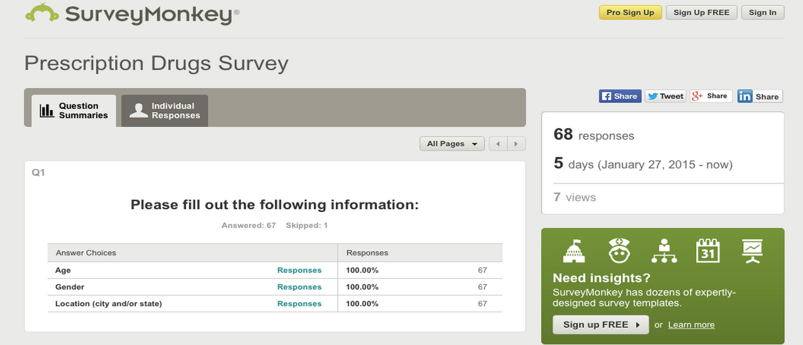
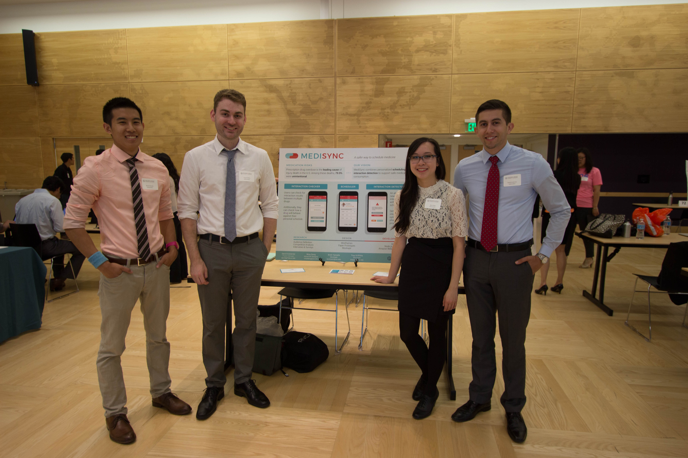

Overview
Background
For my senior capstone human computer interaction project, I am part of a team that is building an application to help those with heart disease check for drug interactions and develop scheduling habits. The project spans 6 months and emphasizes both the UX design process and development lifecycle of an application.
Skills
Purpose
Heart disease is the leading cause of death in the United States. Coronary artery disease (CAD), heart attack, and high blood pressure all require different types of medications and information about drug interactions, which can be confusing. There is currently no application in the market that can relay drug interaction information to users while also keeping them aware of scheduling habits.
Process
Initial Interview
Our team met with a Pharmacy Technician at the University of Washington’s Hall Health.
Summary of Findings:
Audience Research
A survey was drafted to investigate into the user needs of those with heart conditions and how they interacted with mobile devices. When participants were asked if they were concerned about drug interactions, 70% said yes, and resorted to calling their doctor or Google-ing when they were concerned.
Competitive Analysis
To gain a better understanding of our competitors, we examined six mobile applications that range over the topics of medicine, calendars, and lists. Below is an overview of their features:
User Flows
To ensure no problems existed with how navigation worked with our application, we created user flows that outlined how the user flows through our application.

Persona Creation
Three personas were created and each focused on one of our three main user needs: scheduling, reminders, and drug interactions. Demographic information was based on survey results and heart disease statistics.
Storyboards
Each of our use cases were illustrated using storyboards to better outline our ideas in critique sessions with other teams in our class. These drawings also helped us empathize with our users and refined our design decisions later in our process.
WireFrames
Paper Prototpyes
We interviewed 10 individuals from our target audiences and had them complete a wide variety of tasks. Our team used retrospective probing at the end of the sessions to better understand pain points and their reflections. Notable findings included: a need for renaming some labels like “dashboard”, the placement of icons, and the content that is presented on the homescreen. For a more detailed explanation of our findings, more information can be found here.
Mood Boards
Our group drew inspiration from applications that have vibrant colors, curved UI elements, and material design. We compiled a document outlining how we wanted our application to look and feel. We ultimately chose the red version because of its relation to heart disease.
Hi Fidelity Mockups
High quality versions of our mockups were designed using the programs Sketch and Adobe Illustrator.

Result
Our team is currently developing the applicatione for iOS in Swift, and will be presenting and demonstrating MediSync at UW's Informatics Capstone event.
Final Deliverable
Medisync was developed as a single page application using the MEAN stack. The biggest challenge for me was time constraints - I had only 3 months to develop so I spent almost all of my time during this period using stackoverflow to learn these new technologies. This allowed me to learn modern web development methods such as MVC patterns, API calls, build systems, and authentication. You can view the service here. Note that this service is intended for demonstration purposes only.
Presentation
Our group presented to panel members from Starbucks and Tableau at the Informatics Capstone Event. Our booth gathered quite a bit of attention and we were interviewed about the impact of our application. This experience was very rewarding as we got to see how others interacted with our final product, we loved seeing people discover everything Medisync can do.
